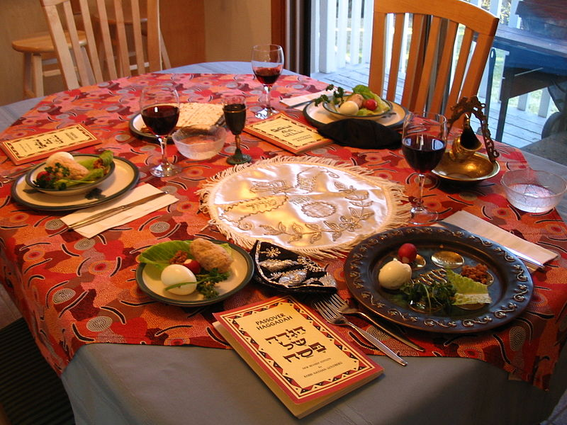
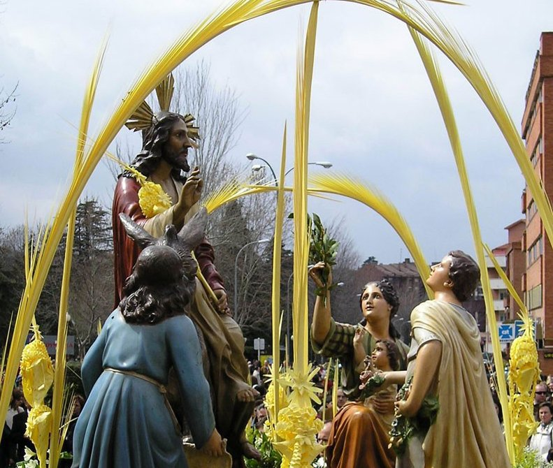

Los testigos de jehova:
Los miembros de esta religión celebran la Cena del Señor con pan sin levadura y vino en sus congregaciones. A esta fracción del pan solo pueden acercarse las personas ungidas –según sus escritos– aquellos que tengan la esperanza de ir al cielo.
Los judios:
Que no creen en Jesús como su Salvador, celebran el matza, una cena que consiste en hierbas con sabor amargo y pan sin levadura (ácimo) en forma de galleta. El sabor amargo recuerda la esclavitud que vivió el pueblo de Israel ante los egipcios; y el pan sin levadura, según las escrituras bíblicas, simboliza la humildad de esta comunidad.

Los catolicos:
Las tradiciones católicas durante la Semana Mayor incluyen procesiones con diferentes imágenes de Cristo, la Virgen y los santos; vía crucis en los templos, por las vías de las ciudades o en cerros tutelares, y varias ceremonias especiales.

Yelissa Valverde Cazahuatl